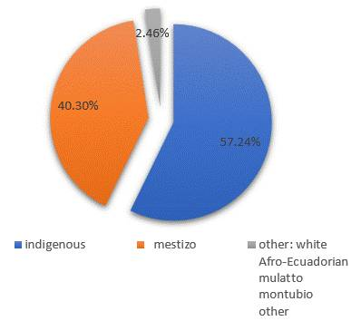

Statistics
Urban and rural resident population, distribution of the ethnic population, employed population by branch of activity, economic indicators, participation in economic activity and main activities that generate the most income in the municipality of Valle de Otavalo.
Otavalo
Otavalo, town, north-central Ecuador, in the highlands of the Andes Mountains at an elevation of 8,441 feet (2,573 metres).
The area was densely settled by the Otavalo Indians prior to its conquest by the Incas and became a Spanish-controlled settlement in the 16th century.
Otavalo produces cereals, potatoes, fruit, and livestock. The weekly Indian markets and animal markets are famous tourist attractions.
The Indian market is known mainly for its cotton and woolen textiles (ponchos, carpets), leather goods, and native jewelry. The Yamor festival, a harvest celebration, takes place in the town in early September. Otavalo is connected by the Pan-American Highway to Quito. Pop. (2001) 30,965; (2010) 39,354.
Population
| Population | 104,874 inhabitants |
| Urban | 37.5% |
| Rural | 62.5% |
| Female | 51.9% |
| Male | 48.1% |
Distribution of the Ethnic Population
October 31, 2003, the National Congress declared Otavalo the "Intercultural Capital of Ecuador" for being "a space for creative relations between indigenous people and mestizos, as well as a national benchmark for unity in diversity."
Employed population by branch of activity
The manufacturing industry is the largest economic activity in Otavalo.
Participation in economic activity
| Economic establishments | 3.8 thousand establishments |
| Sales Income | 537 million |
| Employed Personnel | 9.7 thousand people |
Main activities that generate the most income
- Wholesale and retail trade - vehicle repair automobiles and motorcycles represent 82.5%
- Manufacturing industries represent 3.4%
- Professional, scientific and technical activities represent 3.4%
Photo Gallery
Plaza de Ponchos
Sale of crafts of all kinds.
Condor Park
Bird of prey rescue and care center
Mojanda Lagoon
A series of crater lakes
Stores
Located on the main streets
Shanandoa Pie Shop
Classic homemade fruit pies